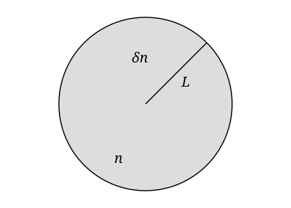
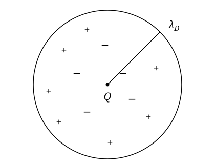
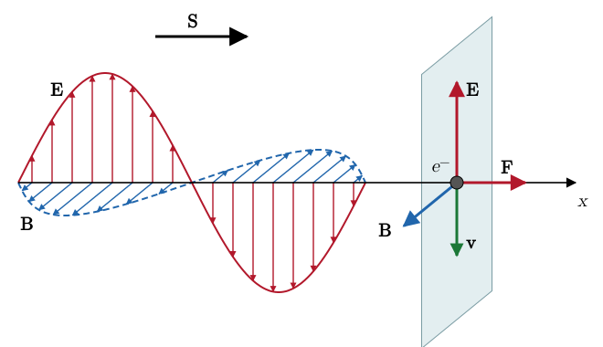
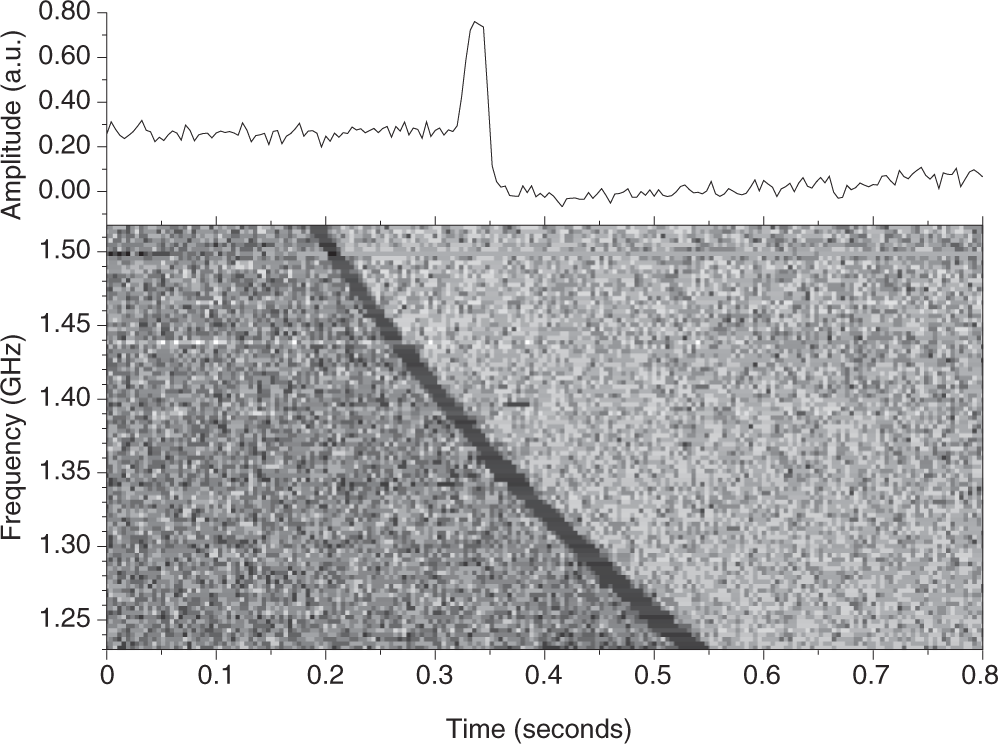
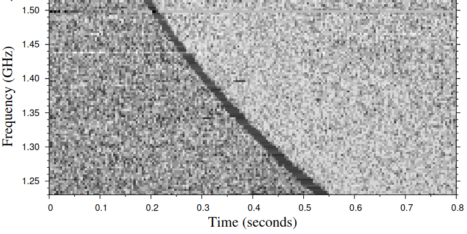

22 Introduction to Plasma
22.1 Electromagnetism Refresher
22.1.1 Lorentz Force and Maxwell Equations
Most of the baryonic matter in the Universe is in the form of plasma, a state of matter characterized by large electrical conductivity and charge mobility. Not surprisingly, plasma physics plays an important role in many astrophysical systems. Before we are ready to discuss plasmas, or even before we can precisely state what plasma is, it is a good idea to refresh some key concepts from electromagnetism. In the process, we will also introduce CGS units, which are ubiquitous in astronomy.
The starting point for electromagnetism is the observation that some particles, electrons and protons, are endowed with electric charge, which as an intrinsic property, like mass. When two lumps of matter with net charge \(Q_1\) and \(Q_2\) are placed at a distance \(r\), the two experience a force, which we write in CGS units as \[ F = \frac{Q_1 Q_2}{r^2} . \tag{22.1}\] The force is repulsive if \(Q_1 Q_2 > 0\) and attractive if \(Q_1 Q_2 < 0\). Note that there is no Coulomb constant in the previous equation. This is not a typo, but a feature of CGS units. In these units, charge, which is measured in Statcoulomb, is not a fundamental unit, but can be defined in terms of \(\mathrm{g}\), \(\mathrm{cm}\), and \(\mathrm{s}\) using Equation 22.1: \[ [Q]^2 = [F] L^2 = [M] [L] [T]^{- 2} [L]^2 \Longrightarrow [Q] =\mathrm{g}^{1 / 2} \mathrm{cm}^{3 / 2} \mathrm{s}^{- 1} = : \mathrm{statC} . \tag{22.2}\] The charge of the electron is \[ e = 4.8032047 \times 10^{- 10} \mathrm{statC} . \tag{22.3}\] The Coulomb force on particle 2 can also be thought as the effect on particle 2 of an electrostatic field produced by particle 1. In a system of coordinates centered on particle 1, the lines of force of the electrostatic field produced by particle 1 are \[ \mathbf{E}= \frac{Q_1}{r^2} \hat{\mathbf{r}} \tag{22.4}\] and the force on particle 2 is given by \[ \mathbf{F}= \frac{Q_1 Q_2}{r^2} \hat{\mathbf{r}} = Q_2 \mathbf{E}. \tag{22.5}\] In general, a charged particle with charge \(Q\) moving in an electromagnetic field experiences the so-called Lorentz force: \[ \mathbf{F}= Q \left( \mathbf{E}+ \frac{\mathbf{v} \times \mathbf{B}}{c} \right), \tag{22.6}\] where \(c\) is the speed of light. In CGS units, the electric \(\mathbf{E}\) and magnetic \(\mathbf{B}\) fields are defined by Equation 22.6. They also have the same units, as can be easily checked: \[ [\mathbf{E}] = [\mathbf{B}] = \mathrm{cm}^{- 1 / 2} \mathrm{g}^{1 / 2} \mathrm{s}^{- 1} . \tag{22.7}\] The fact that \(\mathbf{E}\) and \(\mathbf{B}\) have the same units in CGS is the main reason why these units are still widely used. Indeed, electric and magnetic fields are different manifestations of a single field: the electromagnetic field, as is revealed by special relativity. The electromagnetic field can be found as solution of the Maxwell’s field equations \[ \begin{array}{lll} \nabla \cdot \mathbf{E}= 4 \pi q, & & \nabla \cdot \mathbf{B}= 0,\\ \nabla \times \mathbf{E}= - \frac{1}{c} \frac{\partial \mathbf{B}}{\partial t}, & & \nabla \times \mathbf{B}= \frac{4 \pi}{c} \mathbf{j}+ \frac{1}{c} \frac{\partial \mathbf{E}}{\partial t} . \end{array} \tag{22.8}\] In the previous equation, \(q\) is the charge density and \(\mathbf{j}\) the current density. The equations in the first row are called the Gauss law for electric and magnetic fields. The second two equations are the Faraday, or induction, equation (left column), and the Ampere-Maxwell law (right column).
22.1.2 Electrostatics
If \(\frac{\partial \mathbf{E}}{\partial t} =\mathbf{B}= 0\), Maxwell equations simplify to \[ \nabla \cdot \mathbf{E}= 4 \pi q, \nabla \times \mathbf{E}= 0, \tag{22.9}\] The second equation tells us that \(\mathbf{E}= - \nabla \Phi\), where \(\Phi\) is the electrostatic potential. The latter satisfies the Poisson equation \[ \nabla^2 \Phi = - 4 \pi q. \tag{22.10}\] Apart from a minus sign, this is the same equation satisfied by the gravitational potential.
The force experienced by a charge \(Q\) in an electrostatic field is \[ \mathbf{F}= Q\mathbf{E}= - Q \nabla \Phi . \tag{22.11}\]
Even though electrostatic and gravitational forces have a similar mathematical structure, these forces are very different for two reasons. First, gravity is always attractive, because no forms of matter are known to possess negative mass, while electric charge can be positive or negative and objects of similar charge repel each other. Second, gravity is a very weak force, as we explore with the next example.
The argument we have just made for the Sun apply to most astrophysical systems. This implies that the charge imbalance in astronomical objects must be very small. In other words, they are quasi-neutral. As we will see shortly, quasi-neutrality is one of the key characteristics an ionized gas must have to be considered to be plasma. At this point, it is important to remark that, while we will be concerned only with systems that have zero net charge, these systems can still contain electric currents, which give rise to magnetic fields and internal stresses via the Lorentz force.
If we take the divergence of Ampere’s law we find \[ \frac{\partial \nabla \cdot \mathbf{E}}{\partial t} + 4 \pi \nabla \cdot \mathbf{j}= 0. \tag{22.19}\] Using Gauss’ law \[ \frac{\partial q}{\partial t} + \nabla \cdot \mathbf{j}= 0. \tag{22.20}\] So the charge density satisfies a continuity equation, just like the mass density for a fluid. In other words, the Maxwell equations imply charge conservation.
It is also possible to show that the Maxwell equation imply conservation of the energy in the electromagnetic field. To see this, consider the work done by the electromagnetic field on a fluid with charge density \(q\) and velocity \(\mathbf{v}\). The Lorentz force per unit volume is \[ \mathbf{f}= q \left( \mathbf{E}+ \frac{\mathbf{v} \times \mathbf{B}}{c} \right) . \tag{22.21}\] So the work per unit volume is (using \(\mathbf{j}= q\mathbf{v}\) and Ampere’s law) \[ w =\mathbf{f} \cdot \mathbf{v}= q\mathbf{E} \cdot \mathbf{v}=\mathbf{E} \cdot \mathbf{j}= \frac{1}{4 \pi} \left[ c (\nabla \times \mathbf{B}) \cdot \mathbf{E}-\mathbf{E} \cdot \frac{\partial \mathbf{E}}{\partial t} \right] . \tag{22.22}\] Using the vector identity \[ \mathbf{E} \cdot (\nabla \times \mathbf{B}) =\mathbf{B} \cdot (\nabla \times \mathbf{E}) - \nabla \cdot (\mathbf{E} \times \mathbf{B}) \tag{22.23}\] and \[ \mathbf{E} \cdot \frac{\partial \mathbf{E}}{\partial t} = \frac{1}{2} \dfrac{\partial E^2}{\partial t}, \tag{22.24}\] we can write \[ \mathbf{E} \cdot \mathbf{j}= \frac{1}{4 \pi} \left\{ c [\mathbf{B} \cdot (\nabla \times \mathbf{E}) - \nabla \cdot (\mathbf{E} \times \mathbf{B})] - \frac{1}{2} \frac{\partial E^2}{\partial t} \right\}, \tag{22.25}\] we can use Faraday’s law to get rid of \(c \nabla \times \mathbf{E}\) to rewrite the last equation as \[ \frac{1}{8 \pi} \frac{\partial (E^2 + B^2)}{\partial t} + \nabla \cdot \left( \frac{c}{4 \pi} \mathbf{E} \times \mathbf{B} \right) = -\mathbf{E} \cdot \mathbf{j}. \tag{22.26}\] We can recognize that this is a conservation law in the form \[ \frac{\partial u_{\operatorname{EM}}}{\partial t} + \nabla \cdot \mathbf{S}= -\mathbf{E} \cdot \mathbf{j}. \tag{22.27}\] The last term is the work done by the electric field, so we can interpret \(u_{\operatorname{EM}} = \tfrac{E^2 + B^2}{8 \pi}\) as the energy in the electromagnetic field and the vector \(\mathbf{S}= \frac{c}{4 \pi} \mathbf{E} \times \mathbf{B}\), called the Poynting flux, as the flux of electromagnetic energy. Equation 22.26 is also called the Poynting theorem. As we will see later, the equation for energy conservation for a plasma is just the sum of the energy conservation equations for the matter, which we already know as the energy equation, and the energy conservation equation for the electromagnetic field.
22.1.3 Electromagnetic Waves
The propagation of electromagnetic waves in vacuum can be studied with a similar formalism as that used to study sound waves. Actually, since Maxwell equations are linear, the derivation of the dispersion relation for electromagnetic waves is simpler than that for sound waves. The starting point are the Maxwell equations in vacuum: \[ \begin{array}{lll} \nabla \cdot \mathbf{E}= 0, & & \nabla \cdot \mathbf{B}= 0,\\ \nabla \times \mathbf{E}= - \frac{1}{c} \frac{\partial \mathbf{B}}{\partial t}, & & \nabla \times \mathbf{B}= \frac{1}{c} \frac{\partial \mathbf{E}}{\partial t} . \end{array} \tag{22.28}\] We look for solutions in the form \[ \mathbf{E} (t, \mathbf{x}) = \hat{\mathbf{E}}_0 e^{\mathrm{i} (\mathbf{k} \cdot \mathbf{x}- \omega t)}, \qquad \mathbf{B} (t, \mathbf{x}) = \hat{\mathbf{B}}_0 e^{\mathrm{i} (\mathbf{k} \cdot \mathbf{x}- \omega t)} . \tag{22.29}\] Inserting this ansatz into the first row of Equation 22.28, we obtain \[ \nabla \cdot \mathbf{E}= 0 \Longrightarrow \mathrm{i} \mathbf{k} \cdot \hat{\mathbf{E}}_0 e^{\mathrm{i} (\mathbf{k} \cdot \mathbf{x}- \omega t)} = 0 \Longrightarrow \mathbf{k} \perp \hat{\mathbf{E}}_0 \tag{22.30}\] and, similarly, \(\mathbf{k} \perp \hat{\mathbf{B}}_0\). This means that, differently from sound waves, electromagnetic waves in vacuum are transverse, meaning that \(\mathbf{E}\) and \(\mathbf{B}\) are perpendicular to the direction of propagation of the wave.
From Faraday’s law, we obtain that \[ \frac{\mathrm{i} \omega}{c} \hat{\mathbf{B}}_0 e^{\mathrm{i} (\mathbf{k} \cdot \mathbf{x}- \omega t)} = \mathrm{i} \mathbf{k} \times \hat{\mathbf{E}}_0 e^{\mathrm{i} (\mathbf{k} \cdot \mathbf{x}- \omega t)} \Longrightarrow \frac{\omega}{c} \hat{\mathbf{B}}_0 =\mathbf{k} \times \hat{\mathbf{E}}_0 . \tag{22.31}\] This implies that \(\hat{\mathbf{E}}_0 \perp \hat{\mathbf{B}}_0\). From Ampere’s law, we obtain \[ \mathbf{k} \times \hat{\mathbf{B}}_0 = - \frac{\omega}{c} \hat{\mathbf{E}}_0 . \tag{22.32}\] Substituting Equation 22.32 into Equation 22.31, we obtain (using the properties of the double vector product) \[ \frac{\omega}{c} \hat{\mathbf{B}}_0 = - \frac{c}{\omega} \mathbf{k} \times (\mathbf{k} \times \hat{\mathbf{B}}_0) = \cancel{- \frac{c}{\omega} \mathbf{k} (\mathbf{k} \cdot \hat{\mathbf{B}}_0)} + \frac{c}{\omega} k^2 \hat{\mathbf{B}}_0 = \frac{c}{\omega} k^2 \hat{\mathbf{B}}_0 \Longrightarrow \boxed{\omega^2 = c^2 k^2} . \tag{22.33}\] So electromagnetic waves satisfy the same dispersion relation as sound waves, but with \(c\), the speed of light, instead of the sound speed \(c_s\).
22.2 Plasma
22.2.1 What is a Plasma?
Consider a quasi-neutral gas made of electrons and ions. Assume that, due to a thermal fluctuation, a small over density of electrons \(\delta n\) is created in a region with characteristic size \(L\). How large can this fluctuation be?

The electrostatic potential created by this over-density is of order \[ \delta \Phi \sim 4 \pi L^2 e \delta n. \tag{22.34}\] The potential energy of each electron is \[ U \sim e \delta \Phi . \tag{22.35}\] Their kinetic is \(K \sim k_B T\) (in thermodynamic equilibrium). Thermal fluctuations should have \(U \sim K\), so \[ 4 \pi L^2 e^2 \delta n \sim k_B T \Longrightarrow \frac{\delta n}{n} \sim \frac{1}{L^2} \left( \frac{k_B T}{4 \pi ne^2} \right) =: \left( \frac{\lambda_D}{L} \right)^2, \tag{22.36}\] where \(n\) is the density of free electrons and we have introduced the Debye length \[ \boxed{\lambda_D = \sqrt{\frac{k_B T}{4 \pi ne^2}} .} \tag{22.37}\] The Debye length is a characteristic length scale for charge fluctuations in the gas. Over scales \(L \gg \lambda_D\), one can assume that the medium is neutral, if the density of the gas is sufficiently high.
To see this, consider again a uniform gas of electrons and ions. The ion masses are of order \(Am_p \sim (2 \times 10^3) Am_e\), so if ions and electrons have on average the same kinetic energy, as would be expected in equilibrium \(v_{\operatorname{ions}} \ll v_e\). To first approximations, we can consider the ions to be static and immersed in a sea of electrons. If electrons are abundant, each ion will then be surrounded by a sea of electrons, which effectively shield its charge hiding it from the other ions, as shown in Figure 22.3.

It turns out that, in this situation, the electrostatic potential near the ion is \[ \Phi (r) = \frac{q}{r} e^{- r / \lambda_D}, \tag{22.38}\] where \(\lambda_D\) is the Debye length. In other words, the Debye length is also the characteristic screening length. However, screening can only take place if electrons are sufficiently mobile to screen each ion. To quantify this, we define the plasma parameter: \[ \Lambda = \frac{4}{3} \pi n \lambda_D^3 = \frac{1}{6 \sqrt[]{\pi} e^3} (k_B T)^{3 / 2} n^{- 1 / 2} . \tag{22.39}\] The plasma parameter is just the number of electrons in each Debye sphere. We say that a ionized gas for which \(\lambda_D \ll L\) and \(\Lambda \gg 1\) is a plasma. Typical plasma parameters for astrophysical systems are given in Table 22.1. As we can see, astrophysical plasmas span tremendous range in scales.
| \(T\) [K] | \(n_e^{\mathrm{free}}\) [cm\(^{-3}\)] | \(\lambda_D\) [cm] | \(\Lambda\) | plasma? | |
|---|---|---|---|---|---|
| The Sun | \(10^7\) | \(10^{26}\) | \(2 \times 10^{-9}\) | \(4.5\) | yes |
| Warm ISM | \(10^4\) | \(1\) | \(700\) | \(3 \times 10^9\) | yes |
| Molecular clouds | \(10\) | \(10^{-4}\) | \(2 \times 10^4\) | \(10^7\) | yes |
| Intracluster medium | \(10^7\) | \(10^{-3}\) | \(7 \times 10^5\) | \(3 \times 10^{15}\) | yes |
| Protoneutron star | \(10^{11}\) | \(2 \times 10^{38}\) | \(1.6 \times 10^{-13}\) | \(3.2\) | yes |
| White dwarf | \(10^5\) | \(6 \times 10^{29}\) | \(2 \times 10^{-12}\) | \(5.8 \times 10^{-5}\) | no |
22.2.2 Cold Plasma Approximation
The cold plasma approximation is used to study the propagation of electromagnetic waves, particularly radio waves, in the interstellar medium. As the name suggests, in the cold plasma approximation we ignore the thermal motion of the electrons. We also take the ions to be stationary. Let’s consider the propagation of an electromagnetic wave through such medium, as illustrated in Figure 22.4.

The Lorentz force experienced by an electron is (assuming \(v \ll c\)): \[ \mathbf{F}= - e \left( \mathbf{E}+ \frac{\mathbf{v} \times \mathbf{B}}{c} \right) \approx - e\mathbf{E}. \tag{22.40}\] So, if we take \(\mathbf{E}= \hat{\mathbf{E}}_0 e^{\mathrm{i} (\mathbf{k} \cdot \mathbf{x}- \omega t)}\) and \(\mathbf{v}= \hat{\mathbf{v}}_0 e^{\mathrm{i} (\mathbf{k} \cdot \mathbf{x}- \omega t)}\), we have \[ \quad \hat{\mathbf{v}}_0 = \frac{e \hat{\mathbf{E}}_0}{\mathrm{i} \omega m_e} . \tag{22.41}\] The induced current density in the plasma is \[ \hat{\mathbf{j}} = - ne \hat{\mathbf{v}}_0 = \left( \frac{\mathrm{i} ne^2}{\omega m_e} \right) \hat{\mathbf{E}}_0 = : \sigma \hat{\mathbf{E}}_0, \tag{22.42}\] where we have introduced the conductivity \(\sigma\). Charge conservation is \[ \frac{\partial q}{\partial t} + \nabla \cdot \mathbf{j}= 0 \Longrightarrow - \mathrm{i} \omega \hat{q}_0 + \mathrm{i} \mathbf{k} \cdot \hat{\mathbf{j}}_0 = 0 \Longrightarrow \hat{q}_0 = \frac{\mathbf{k} \cdot \hat{\mathbf{j}}_0}{\omega} = \frac{\sigma}{\omega} \mathbf{k} \cdot \hat{\mathbf{E}}_0 . \tag{22.43}\] Gauss’ law reads \[ \mathrm{i} \mathbf{k} \cdot \hat{\mathbf{E}}_0 = 4 \pi \hat{q}_0 \Longrightarrow \mathrm{i} \mathbf{k} \cdot \left( 1 - \frac{4 \pi \sigma}{\mathrm{i} \omega} \right) \hat{\mathbf{E}}_0 = 0. \tag{22.44}\] Introducing the dielectric constant \[ \begin{gathered} \epsilon = 1 - \frac{4 \pi \sigma}{\mathrm{i} \omega} = 1 - \left( \frac{\omega_p}{\omega} \right)^2, \\ \omega_p = \sqrt{\frac{4 \pi ne^2}{m}} = 56.3 \mathrm{kHz} \left( \frac{n}{1 \mathrm{cm}^{- 3}} \right)^{1 / 2} . \end{gathered} \tag{22.45}\] we find that the Maxwell equations reduce to \[ \begin{array}{lll} \mathrm{i} \mathbf{k} \cdot \epsilon \hat{\mathbf{E}}_0 = 0, & & \mathrm{i} \mathbf{k} \cdot \hat{\mathbf{B}}_0 = 0,\\ \mathrm{i} \mathbf{k} \times \hat{\mathbf{E}}_0 = \mathrm{i} \frac{\omega}{c} \hat{\mathbf{B}}, & & \mathrm{i} \mathbf{k} \times \hat{\mathbf{B}}_0 = - \mathrm{i} \frac{\omega}{c} \epsilon \hat{\mathbf{E}}_0 . \end{array} \tag{22.46}\] These can be solved in the same way as the vacuum Maxwell equations to find the dispersion relation for electromagnetic waves in a cold plasma \[ c^2 k^2 = \epsilon \omega^2 \Longrightarrow k = \frac{\omega}{c} \sqrt{1 - \left( \frac{\omega_p}{\omega } \right)^2} \Longrightarrow \boxed{k = \frac{1}{c} \sqrt{\omega^2 - \omega_p^2} .} \tag{22.47}\] For example, if the wave is propagating in the \(z\)-direction, \(\mathbf{k}= \left(\begin{array}{ccc} 0 & 0 & k \end{array}\right)^T\). Then
If \(\omega < \omega_p\), then \(k\) is imaginary: the wave is damped: \[ \mathbf{E}= \hat{\mathbf{E}}_0 e^{\mathrm{i} \omega t} e^{- \frac{z}{c} \sqrt{\omega_p^2 - \omega^2}} . \tag{22.48}\] This is a remarkable property of plasma. Even though the motion of particles and fields in the plasma are described by equations that do not have dissipation, we find that some waves are damped.
If \(\omega > \omega_p\) the wave can propagate, but different frequencies propagate at different speeds: \[ v_g = \frac{\partial \omega}{\partial k} = c \sqrt{1 - \frac{\omega_p^2}{\omega^2}} . \tag{22.49}\] This leads to the phenomenon of dispersion, which can be used to estimate the column distance to sources of radio pulses, such as pulsars and fast radio-bursts, as illustrated in Figure 22.5.

Figure 22.5: Different arrival time of a fast radio burst at different frequencies as a result of dispersion in the ISM: the first fast radio burst, FRB 010724. From Lorimer (2018) (figure by E. Keane); © Springer Nature, reproduced for non-commercial educational use and not covered by the license of these notes.
22.3 In-class worksheet
Fast radio bursts are thought to be millisecond-long broad-band radio flares, produced during particularly violent magnetar flares, and possibly other astrophysical events. As the radio waves propagates from the source to Earth through the interstellar medium, the signal is dispersed, as shown in Figure 22.6:

The time of arrival of the peak of the burst at angular frequency \(\omega\), \(t_p (\omega)\) is given by \[ t_p = \int_0^d \frac{\mathrm{d} s}{v_g (\omega)}, \tag{22.50}\] where \(d\) is the (luminosity) distance to the source and \(v_g (\omega)\) is the group velocity at frequency \(\omega\). The approximate arrival times for FRB 010724 are tabulated below
| \(t_p [\mathrm{s}]\) | 0.21 | 0.27 | 0.31 | 0.36 | 0.44 |
|---|---|---|---|---|---|
| \(f [\mathrm{GHz}]\) | 1.50 | 1.44 | 1.39 | 1.35 | 1.30 |
Assume that the interstellar medium is a cold plasma, with plasma frequency \[ \omega_p = \sqrt{\frac{4 \pi ne^2}{m_e}}, \tag{22.51}\] where \(n\) is the number density of free electrons, and that \(\omega \gg \omega_p\). Show that \[ t_p (\omega) \approx \frac{d}{c} + \frac{1}{2 c \omega^2} \int_0^d \omega_p^2 \mathrm{d} s. \tag{22.52}\]
Show that \[ \frac{\mathrm{d} t_p}{\mathrm{d} \omega} = - \frac{4 \pi e^2}{cm_e \omega^3} \operatorname{DM}, \tag{22.53}\] where DM is the dispersion measurement: \[ \operatorname{DM} = \int_0^d n \mathrm{d} s. \tag{22.54}\]
Compute the DM for FRB 010724. In the direction of this source, the DM due to free electrons within the Milky Way is estimated to be \(\operatorname{DM} = 25 \mathrm{cm}^{- 3} \operatorname{pc}\). Is this source extragalactic?
22.4 Further reading
- Clarke and Carswell (2007), Chapter 13 (plasmas).